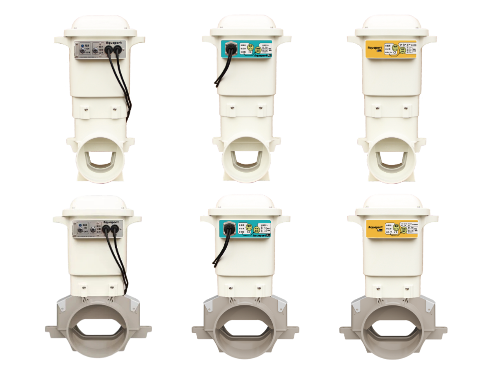
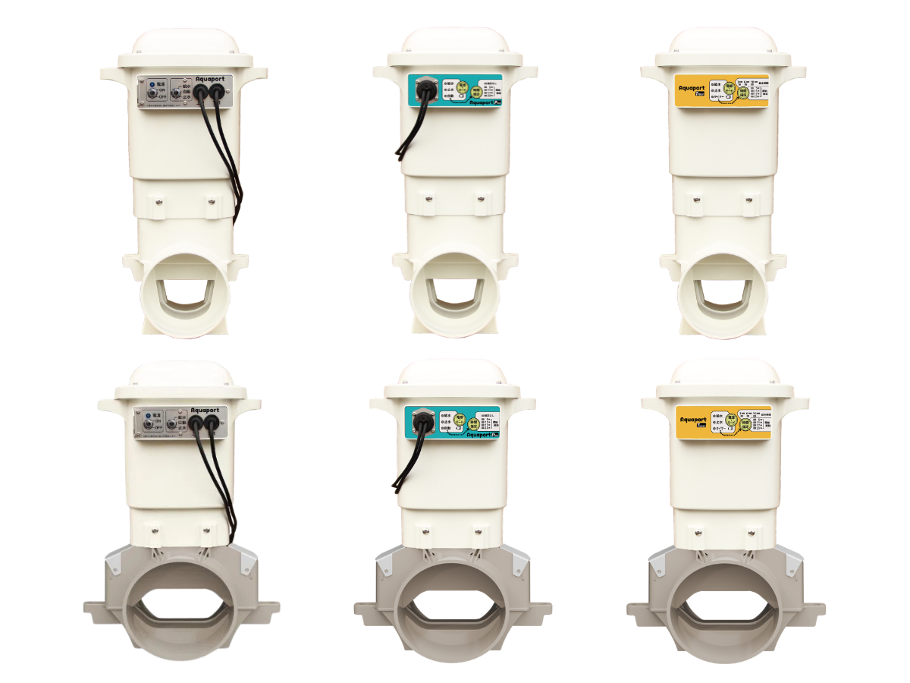

海外採購代理海外調達代行
代替無在台據點之企業，協助在台採購商品、零件、議價、銷路拓展。涵蓋電子零件、機械加工件、半導體等多元品項。 台湾に拠点のない企業に代わり、商品・部品調達、価格交渉、販路開拓を実施。電子部品、機械加工品、半導体など多岐にわたる品目に対応します。
第一是海外業務代行與全球採購，第二是AquaPort 水田用自動給水系統。我們從台北出發，為日系企業提供值得信賴的在地夥伴關係。 第一に海外業務代行とグローバル調達、第二にAquaPort 水田用自動給水システム。台北を起点に、日系企業の信頼できる現地パートナーとなります。
為「在台無據點之日本企業」與「欲與日本企業交易之台灣企業」提供完整的業務代行解決方案。本公司以台灣在地法人之姿，協助客戶採購電子零件、機械加工件、OEM 生產，並提供販售、議價、銷路拓展等服務。 「台湾に拠点のない日系企業」と「日本企業との取引を希望する台湾企業」の双方に、完全な業務代行ソリューションを提供。台湾現地法人として、電子部品・機械加工品・OEM 生産の調達、販売、価格交渉、販路開拓をサポートいたします。
已採購電子零件、機械加工零件 20 餘年，並與台灣數間大小規模企業聯手，提供符合客人需求之品質、產品和價格。 電子部品・機械加工部品の調達は 20 年以上の実績。台湾の大小様々な企業と連携し、お客様のニーズに合わせた品質・製品・価格をご提案します。
代替無在台據點之企業，協助在台採購商品、零件、議價、銷路拓展。涵蓋電子零件、機械加工件、半導體等多元品項。 台湾に拠点のない企業に代わり、商品・部品調達、価格交渉、販路開拓を実施。電子部品、機械加工品、半導体など多岐にわたる品目に対応します。
以您的名義在台灣／中國運營，如同擁有海外分公司一般，省下設立法人的人事、租金等龐大費用與時間。 貴社名義で台湾・中国にて運営。海外法人設立に伴う人件費・賃料等の固定費と時間を削減します。
產假、育嬰假等人力斷層期間，由我們派遣熟悉台日業務的人員短期或長期支援，業務不中斷。 産休・育休等の人材ギャップ期間中、日台業務に精通した人員を短期・長期で派遣し、業務継続をサポートします。
當客戶想確認台灣在地的製品・商品時，本公司透過 Zoom 等即時連線回報當地狀況，亦可代替貴公司海外人員在台執行各項業務。 台湾現地の製品・商品確認をお求めの場合、Zoom 等のオンライン会議で現地状況を即時報告。貴社海外要員の代わりに現地業務を代行いたします。
日本、韓國製半導體產品的進出口報關業務，從文件處理到實際通關全程代辦。 日本・韓国製半導体の輸出入通関業務。書類対応から実通関まで一括対応します。
台灣保稅倉庫的發貨與出倉業務，配合產品諮詢與在地物流調度，協助您高效管理庫存。 台湾保税倉庫からの出荷・出庫業務。製品問い合わせ対応と現地物流調整を組み合わせ、効率的な在庫管理を実現します。
在台無據點之日本企業，欲在台灣／中國採購零件、商品販售。委託本公司以其名義營運，如同海外分公司。台湾に拠点のない日系企業が、台湾・中国で部品調達や販売を行う場合。貴社名義で海外支店のように運営します。
在台無據點之日本企業之業務委託。我們提供完整在地落地服務，包含採購、銷售、出貨進貨處理。台湾に拠点のない日系企業の業務委託。調達・販売・出荷入荷処理まで現地落とし込みを完全サポート。
欲與日本企業交易之台灣企業之業務委託。無須擔憂須付聘用專屬日文人才訓練等龐大費用和時間。日系企業との取引を望む台湾企業の業務委託。日本語専任人材の採用・教育に伴う多大なコスト・時間を回避できます。
於台灣與中國各大製造城市深耕在地供應網絡，提供從零件採購到 OEM 生產的完整解決方案。 台湾と中国の主要製造都市にて現地サプライネットワークを構築。部品調達から OEM 生産まで一貫対応します。
採購：鋁壓鑄品、塑膠成型、冷鍛、陶瓷、AC 電源線、電子零件、半導體、鈑金、馬達、線束、LAN 電纜
銷售：電子零件、電機、電子產品調達：アルミダイカスト、プラスチック成形、冷鍛、セラミック、AC 電源コード、電子部品、半導体、板金、モーター、ハーネス、LAN ケーブル
販売：電子部品、電機、電子製品
採購：熱水器、電子零件調達：温水器、電子部品
採購：PCB 電路板調達：PCB 基板
採購：遙控器、羽毛產品調達：リモコン、フェザー製品
採購：CdS 光敏電阻調達：CdS（光導電セル）
販售：自動點滅器（照明機器用）販売：自動点滅器（照明機器用）
告訴我們您的需求，由 25 年經驗團隊為您客製方案。 25 年の経験を持つチームが、ご要望に合わせたプランをご提案します。
AquaPort 是一款讓稻作水管理變得更輕鬆的水田用自動給水系統。透過兩個感測器感應水田水位，自動開啟或關閉閘門，進行供水或止水。 アクアポートは、稲作の水管理を楽にする水田用自動給水システム。2 つのセンサーで田んぼの水位を感知し、ゲートを自動開閉して給止水します。
由於結構簡單，與其他公司的水田自動給水系統相比，實現了極具競爭力且平實的價格。 構造がシンプルなため、他社の水田用自動給水システムと比べて圧倒的に手頃な価格を実現。
安裝時只需將其連接至進水口的 PVC 管，並將兩個感測器調整至期望的水位即可。 設置は水口の塩ビ管と繋ぎ、2 つのセンサーを希望の水位に合わせるだけ。
僅需 4 顆一號乾電池即可運作約 6 個月。產品送達當天即可開始使用。 単一電池 4 本で約 6 ヶ月間駆動。届いたその日から使えます。
從操作方式、電池效能到輕量設計，AquaPort 在每一個細節都為農戶著想。 操作方式、電池性能、軽量設計まで、農家に寄り添う細やかな設計。

＊原廠特點圖（資料來源：北菱電興 AquaPort DM） ＊メーカー特長図（出典：北菱電興 AquaPort パンフレット）
將主機連接到水田進水口的 PVC 管路上。本体を水田の水口にある塩ビ管に接続します。
將兩個水位感測器調整至期望的高低水位。2 つのセンサーを希望の高水位・低水位に設定。
放入 4 顆一號乾電池，無須電源工程，即可開始運作。単一乾電池 4 本を入れるだけ、電源工事不要で稼働開始。

＊水田實地安裝示意圖 ＊水田設置イメージ


歡迎農會、農機通路、合作社聯繫，由台灣北菱（總代理）提供方案與報價。 農協、農機販売店、組合等のお問い合わせ歓迎。台湾北菱（総代理店）よりプラン・お見積りをご案内します。